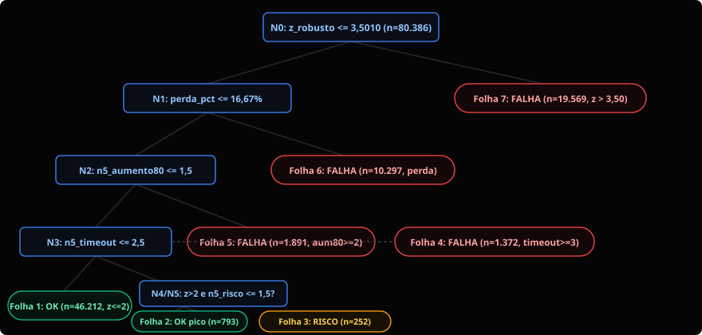
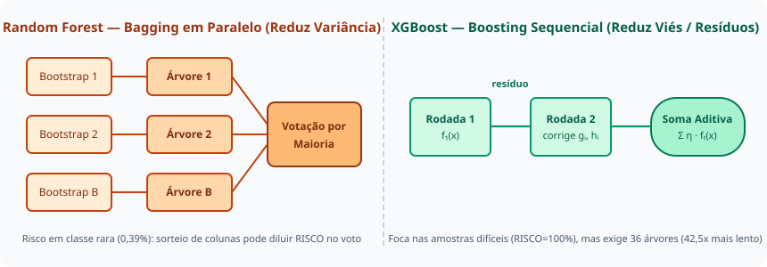
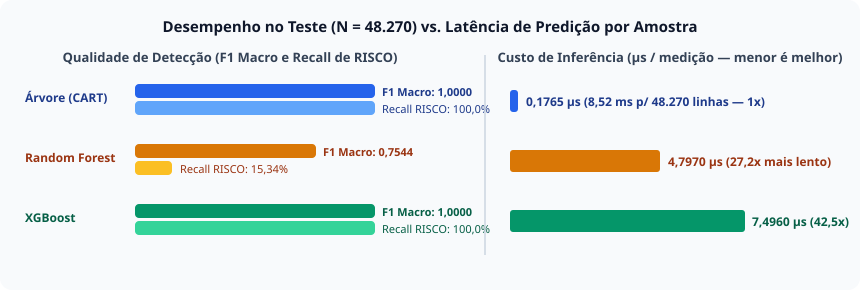

Árvore, Floresta ou Boosting? Escolhendo o Modelo para Detectar Degradação de Rede sem Confundir Geografia com Falha
Explicamos passo a passo como funcionam Árvore de Decisão (CART), Random Forest (Bagging) e XGBoost (Gradient Boosting), e colocamos os três à prova em 160.804 medições ICMP reais do RIPE Atlas normalizadas pelo baseline de cada fluxo. Descubra por que uma acurácia de 99,67% escondeu o colapso de uma classe inteira e qual modelo recomendamos para operar em tempo real.
1. Introdução: o problema real de redes que queremos resolver
Imagine que você trabalha no Centro de Operações de Rede (NOC) de um provedor ou universidade e precisa monitorar dezenas de enlaces usando medições de ping (ICMP) a cada 4 minutos. Uma regra fixa ingênua — como "se o RTT passar de 100 ms, dispare alerta de FALHA" — comete dois erros graves na prática:
- Alarme falso permanente em rotas longas saudáveis: um cabo submarino entre São Paulo e Tóquio (
BR → JP) ou São Paulo e Índia (BR → IN) leva fisicamente entre277 mse344 mspara ir e voltar na fibra óptica. Com limiar fixo de100 ms, esse enlace saudável aparece em FALHA 100% do tempo. - Cegueira em rotas curtas degradadas: um enlace intra-europeu curto (
DE → DE) tem latência normal de14,1 ms. Se um congestionamento severo elevar esse RTT para31,6 ms(+124% acima do normal), uma regra fixa de100 msdirá que está tudo OK, ignorando a saturação do enlace.
Para resolver esse problema sem ensinar o modelo a decorar países ou endereços IP, congelamos os primeiros 7 dias de coleta (Período A, mínimo de 1.500 respostas válidas por fluxo) como a ficha de baseline de cada par origem-destino (mediana e desvio absoluto mediano MAD). Nos 7 dias seguintes (Período B, 160.804 medições em 64 fluxos elegíveis), descrevemos cada medição apenas pelo seu afastamento relativo ao próprio baseline, classificando o estado operacional em OK (58,63%), RISCO (0,39%) ou FALHA (40,97%).
Neste artigo, você vai aprender como funcionam três algoritmos clássicos baseados em árvores — Árvore de Decisão (CART), Random Forest e XGBoost —, verá o código em Python para treiná-los sem vazamento de dados e descobrirá qual deles escolhemos para o nosso detector de degradação de redes.
Exemplo concreto antes da abstração: duas medições reais do nosso conjunto de teste
Antes de falar de impureza de Gini, entropia, bagging ou boosting, observe duas linhas reais de data/processed/teste_periodo_b.csv que qualquer modelo precisa classificar sem conhecer o IP nem o país:
-
Caso A (Caminho intercontinental longo estável → classe
OK): fluxo301|14.139.0.1(BR → IN) em2026-09-18T02:32:00Z. O RTT medido é alto (342,77 ms), mas a mediana histórica desse fluxo no Período A é339,25 ms(MAD = 2,54 ms). Logo, o desvio padronizado robusto éz_robusto = 0,9347, comperda_pct = 0%en5_timeout = 0. O enlace está operando exatamente dentro do seu normal físico. -
Caso B (Caminho curto em degradação severa → classe
FALHA): fluxo101|194.109.133.10(DE → DE) em2026-09-13T06:12:00Z. O RTT medido é de apenas31,62 ms, mas a mediana histórica desse fluxo curto é14,10 ms(MAD = 0,58 ms). Isso representa um salto dez_robusto = 20,37(+124,26% acima da mediana), indicando anomalia imediata.
2. Modelo 1 — Árvore de Decisão (CART): regras explícitas em cascata
Uma Árvore de Decisão é uma estrutura de dados hierárquica que classifica uma amostra fazendo uma sequência de perguntas binárias ("o atributo X é menor ou igual ao limiar T?") a partir de um nó raiz, percorrendo nós internos até desembocar em uma folha, que entrega a classe prevista (OK, RISCO ou FALHA).
Durante o treinamento (algoritmo CART — Classification and Regression Trees), vamos testar em cada nó todas as variáveis disponíveis e todos os pontos de corte possíveis entre valores adjacentes. Escolhemos a pergunta que produz os dois grupos filhos mais "puros" — isto é, com a menor mistura de classes — segundo um critério de impureza (Índice de Gini ou Entropia de Informação).
Se deixarmos a árvore crescer sem limites até cada folha conter uma única medição, ela vai decorar ruídos pontuais do treino: esse fenômeno é o overfitting (sobreajuste), caracterizado por alta variância (uma pequena mudança nos dados de treino altera drasticamente a árvore). Para evitar isso, controlamos dois hiperparâmetros (parâmetros definidos antes do treino): a profundidade máxima (max_depth) e o mínimo de amostras por folha (min_samples_leaf), realizando a poda (pruning) estrutural.

criterion='entropy', max_depth=6). Cada folha (elipses verdes, amarela e vermelhas) corresponde a uma regra operacional legível e 100% pura no treino (n = 80.386). Licença: CC BY 4.0 (elaborada pelo Grupo 42).
Caixa de Aprofundamento Matemático — Impureza de Gini vs. Entropia de Shannon
Seja $S$ o conjunto de amostras em um nó e $p_c$ a proporção de amostras da classe $c \in \{\text{OK}, \text{RISCO}, \text{FALHA}\}$ naquele nó. O algoritmo CART escolhe o corte $(j, t)$ que maximiza a redução de impureza $\Delta I(S) = I(S) - \frac{|S_L|}{|S|}I(S_L) - \frac{|S_R|}{|S|}I(S_R)$:
- Índice de Gini: $\mathrm{Gini}(S) = 1 - \sum_{c=1}^{K} p_c^2$ (mede a probabilidade de erro ao sortear dois elementos ao acaso no nó).
- Entropia de Informação: $H(S) = -\sum_{c=1}^{K} p_c \log_2(p_c)$ (penaliza logaritmicamente pequenas contaminações de classes minoritárias).
Por que isso importou na nossa Tarefa 4? Na raiz da árvore, o critério de Gini deslocava o corte de z_robusto para 3,4073 e deixava 5 picos isolados OK presos numa folha de FALHA. Ao trocarmos para Entropia, a penalidade logarítmica cravou o corte da raiz em z_robusto <= 3,5010, gerando uma folha direita 100% pura com 19.569 falhas e reduzindo a árvore de 9 para 7 folhas.
3. Modelo 2 — Random Forest (Bagging): estabilidade pelo voto da maioria
Se uma única árvore profunda sofre de alta variância (sensibilidade a pequenas flutuações da amostra de treino), a ideia da Random Forest (proposta por Leo Breiman em 2001) é combinar dezenas ou centenas de árvores independentes treinadas em paralelo e decidir pelo voto da maioria.
Mas atenção: se treinarmos 100 árvores determinísticas exatamente nos mesmos dados e com as mesmas colunas, obteremos 100 árvores idênticas! Para que o conjunto (ensemble) funcione, a Random Forest injeta aleatoriedade em dois lugares:
- Amostra Bootstrap (Bagging — Bootstrap Aggregating): cada árvore é treinada em uma amostra sorteada com reposição do mesmo tamanho do treino original. Em média, cerca de 63,2% das linhas entram no sorteio de uma árvore e 36,8% ficam de fora — formando o conjunto Out-of-Bag (OOB), que permite medir o erro de generalização (erro OOB) sem precisar de um conjunto externo.
- Seleção Aleatória de Atributos (Random Subspace /
max_features): em cada divisão de nó, a árvore não pode olhar todas as $d = 8$ colunas; ela sorteia apenas um subconjunto aleatório de $m$ colunas (tipicamente $m = \lfloor\sqrt{d}\rfloor$ ou um valor ajustado na validação) e escolhe o melhor corte somente entre elas. Isso descorrelaciona as árvores da floresta.
Além da previsão, a Random Forest fornece a importância de atributos (MDI — Mean Decrease in Impurity), somando quanto cada variável reduziu a impureza ao longo de todas as árvores da floresta.
Caixa de Aprofundamento Matemático — Por que o Bagging reduz a variância (e quando o sorteio de colunas atrapalha)?
Se $B$ árvores têm variância individual $\sigma^2$ e correlação média par-a-par $\rho$, a variância da média da floresta é dada por:
$$\operatorname{Var}(\bar{f}) = \rho \sigma^2 + \frac{1 - \rho}{B}\sigma^2$$
Quando $B$ cresce, o segundo termo desaparece, e o sorteio aleatório de atributos (max_features) reduz $\rho$. Porém, há um efeito colateral crítico em redes muito desbalanceadas: quando uma classe é extremamente rara (como a nossa classe RISCO, com apenas 0,39% das medições) e depende da conjunção exata de duas variáveis nos níveis profundos (z_robusto > 2,0 e n5_risco >= 2), as árvores que não sorteiam n5_risco naquele nó votam na classe majoritária OK, podendo diluir a classe rara na votação!
4. Modelo 3 — XGBoost (Gradient Boosting): correção sequencial de resíduos
Enquanto a Random Forest constrói árvores independentes em paralelo para reduzir a variância, o Boosting adota a filosofia oposta: constrói árvores em sequência, onde cada nova árvore é treinada especificamente para corrigir os erros (resíduos) deixados pela soma das árvores anteriores, reduzindo o viés (bias) do modelo.
O XGBoost (eXtreme Gradient Boosting), criado por Tianqi Chen e Carlos Guestrin (2016), elevou o Gradient Boosting ao estado da arte em dados tabulares combinando aproximação de 2ª ordem da função de perda com regularização explícita na estrutura das árvores:
- Taxa de aprendizado (
learning_rateou $\eta$): em vez de somar 100% do peso da nova árvore, multiplicamos sua contribuição por um fator $\eta \in (0, 1]$ (por exemplo,0,35), deixando espaço para as próximas rodadas refinarem a fronteira de decisão. - Regularização ($\lambda$ e $\gamma$): penaliza pesos exagerados nas folhas ($L_2$, controlado por $\lambda$) e exige um ganho mínimo ($\gamma$) para aceitar dividir um nó, atuando como uma poda matemática embutida.
- Parada antecipada (Early Stopping): monitoramos a função de perda (multiclass log-loss) no conjunto de validação a cada rodada e interrompemos o treino se ela parar de cair, prevenindo overfitting.

Caixa de Aprofundamento Matemático — Função Objetivo de 2ª Ordem do XGBoost (Chen & Guestrin, 2016)
Na rodada $t$, o XGBoost minimiza a expansão de Taylor de segunda ordem da perda somada à penalidade de complexidade $\Omega(f_t) = \gamma T + \frac{1}{2}\lambda \sum_{j=1}^{T} w_j^2$: $$\tilde{\mathcal{L}}^{(t)} = \sum_{i=1}^{n} \left[ g_i f_t(x_i) + \frac{1}{2} h_i f_t^2(x_i) \right] + \gamma T + \frac{1}{2}\lambda \sum_{j=1}^{T} w_j^2$$ onde $g_i = \partial_{\hat{y}^{(t-1)}} l(y_i, \hat{y}^{(t-1)})$ é o gradiente de 1ª ordem e $h_i = \partial^2_{\hat{y}^{(t-1)}} l(y_i, \hat{y}^{(t-1)})$ é a hessiana (curvatura de 2ª ordem). O peso ótimo da folha $j$ é $w_j^* = -\frac{\sum_{i \in I_j} g_i}{\sum_{i \in I_j} h_i + \lambda}$, e o ganho exato ao dividir um nó em esquerda ($L$) e direita ($R$) é: $$\mathcal{G}_{\text{split}} = \frac{1}{2} \left[ \frac{(\sum_{i \in I_L} g_i)^2}{\sum_{i \in I_L} h_i + \lambda} + \frac{(\sum_{i \in I_R} g_i)^2}{\sum_{i \in I_R} h_i + \lambda} - \frac{(\sum_{i \in I} g_i)^2}{\sum_{i \in I} h_i + \lambda} \right] - \gamma$$
5. Quadro comparativo: os três modelos lado a lado
A tabela abaixo sintetiza as propriedades teóricas e operacionais dos três algoritmos quando aplicados à telemetria de redes:
| Critério | Árvore de Decisão (CART) | Random Forest (Bagging) | XGBoost (Gradient Boosting) |
|---|---|---|---|
| Como funciona | Uma única árvore particiona o espaço de atributos recursivamente por ganho de informação (Entropia) ou Gini. | Várias árvores independentes treinadas em paralelo com bootstrap e sorteio de colunas; decide por votação. | Árvores rasas construídas em sequência; cada árvore corrige gradientes ($g_i$) e hessianas ($h_i$) dos erros anteriores. |
| O que ataca (Viés vs. Variância) | Baixo viés se tiver profundidade suficiente, porém alta variância se não for podada. | Reduz a variância ao tirar a média/voto de árvores descorrelacionadas. | Reduz o viés (e controla a variância via regularização $\lambda, \gamma$ e shrinkage $\eta$). |
| Vantagens | Regras 100% legíveis por humanos, inferência ultrarrápida ($\sim 0,18\;\mu\text{s}$), zero caixa-preta. | Robusta a ruído moderado, paraleliza fácil e fornece erro Out-of-Bag nativo. | Altíssimo poder preditivo em fronteiras complexas e foco automático nos erros de classes minoritárias. |
| Desvantagens | Sensível a mudanças no dataset se a profundidade/folha mínima não forem bem calibradas. | Perde interpretabilidade direta; sorteio de colunas pode diluir regras de classes raras (0,39%). |
Mais lento para treinar e inferir; exige ajuste cuidadoso de learning_rate, max_depth e $\lambda$. |
| Interpretabilidade | Máxima (Caixa-Branca): exportável como 7 regras SE ... ENTÃO em português. |
Média/Baixa: inspeciona-se apenas importância global de atributos (MDI) ou SHAP. | Baixa: soma de dezenas de árvores em log-odds; exige importância de Ganho ou SHAP para auditoria. |
| Tempo de treino e predição | Mais rápido (`844 ms` treino / `0,18 µs` predição por pacote). | Intermediário (`18,8 s` treino / `4,80 µs` predição — `27x` mais lento). | Mais custoso (`52,6 s` treino / `7,50 µs` predição — `42x` mais lento). |
| Risco de Overfitting | Alto se max_depth=None; baixo quando podada com validação (max_depth=6, min_samples_leaf=20). |
Baixo em relação ao número de árvores, mas pode subajustar classes ultra-raras. | Alto se n_estimators e learning_rate forem grandes sem early stopping. |
| Cenário ideal em redes | Agentes de monitoramento em tempo real com features normalizadas por baseline e exigência de auditoria NOC. | Classificação de tráfego com dezenas de features ruidosas e classes equilibradas. | Detecção de intrusão (IDS) offline/em lote com interações não-lineares sutis e dezenas de atributos brutos. |
6. Código em Python: treinamento reproduzível e sem vazamento
Abaixo mostramos o trecho essencial em Python (compatível com Python 3.12+, scikit-learn==1.5.2 e xgboost==2.1.2, listados em requirements.txt) que treina os três modelos exclusivamente em treino_periodo_b.csv (80.386 linhas), ajusta hiperparâmetros em validacao_periodo_b.csv (32.148 linhas) e avalia uma única vez em teste_periodo_b.csv (48.270 linhas). O script completo sem dependências externas está em src/experimento_artigo.py e o notebook executado em notebooks/7_Experimento_Artigo_Arvore_RF_XGBoost.ipynb.
# Python 3.12+ | scikit-learn==1.5.2 | xgboost==2.1.2 | pandas==2.2.3
import pandas as pd
from sklearn.tree import DecisionTreeClassifier
from sklearn.ensemble import RandomForestClassifier
from sklearn.metrics import classification_report, confusion_matrix, f1_score
from xgboost import XGBClassifier
# 1. Exclusivamente as 8 features relativas ao baseline do Período A (zero país, IP ou RTT bruto)
COLUNAS_MODELO = [
"z_robusto", "aumento_pct", "jitter_relativo", "perda_pct",
"timeout_atual", "n5_timeout", "n5_aumento80", "n5_risco"
]
MAPA_CLASSES = {"OK": 0, "RISCO": 1, "FALHA": 2}
treino = pd.read_csv("data/processed/treino_periodo_b.csv")
validacao = pd.read_csv("data/processed/validacao_periodo_b.csv")
teste = pd.read_csv("data/processed/teste_periodo_b.csv")
# Imputação de timeouts aprendida SOMENTE no treino (evita data leakage)
medianas_treino = treino[COLUNAS_MODELO].median()
X_tr = treino[COLUNAS_MODELO].fillna(medianas_treino)
y_tr = treino["classe"].map(MAPA_CLASSES)
X_va = validacao[COLUNAS_MODELO].fillna(medianas_treino)
y_va = validacao["classe"].map(MAPA_CLASSES)
X_te = teste[COLUNAS_MODELO].fillna(medianas_treino)
y_te = teste["classe"].map(MAPA_CLASSES)
# 2. Modelo 1: Árvore de Decisão (CART) ajustada pelo erro na validação
arvore = DecisionTreeClassifier(
criterion="entropy", max_depth=6, min_samples_leaf=20, random_state=42
)
arvore.fit(X_tr, y_tr)
# 3. Modelo 2: Random Forest (Bagging + Subespaço Aleatório de Atributos)
floresta = RandomForestClassifier(
n_estimators=15, max_depth=6, max_features=5,
min_samples_leaf=20, bootstrap=True, oob_score=True, random_state=42
)
floresta.fit(X_tr, y_tr)
# 4. Modelo 3: XGBoost (Gradient Boosting de 2ª Ordem com Early Stopping na Validação)
xgb = XGBClassifier(
n_estimators=12, max_depth=6, learning_rate=0.35,
reg_lambda=1.0, gamma=0.1, objective="multi:softprob",
num_class=3, eval_metric="mlogloss", random_state=42
)
xgb.fit(X_tr, y_tr, eval_set=[(X_va, y_va)], verbose=False)
# 5. Avaliação única no conjunto de Teste (N = 48.270)
for nome, modelo in [("Árvore CART", arvore), ("Random Forest", floresta), ("XGBoost", xgb)]:
y_pred = modelo.predict(X_te)
print(f"=== {nome} | F1 Macro: {f1_score(y_te, y_pred, average='macro'):.4f} ===")
print(confusion_matrix(y_te, y_pred))7. Experimento e resultados no detector de redes
Nosso dataset público do Anchoring Mesh do RIPE Atlas contém 336.326 medições ICMP (14 dias, 67 fluxos). Os primeiros 7 dias (Período A) geraram a ficha congelada de baseline para os 64 fluxos elegíveis ($\ge 1.500$ RTTs válidos). Os 7 dias seguintes (Período B, 160.804 medições) foram divididos em ordem estritamente cronológica dentro de cada fluxo (sem sorteio aleatório):
- Treino (50% mais antigos):
80.386medições (47.005 OK,252 RISCO,33.129 FALHA); - Validação (20% intermediários — onde ajustamos hiperparâmetros):
32.148medições (18.975 OK,131 RISCO,13.042 FALHA); - Teste (30% mais recentes — aberto uma única vez):
48.270medições (28.303 OK,189 RISCO,19.778 FALHA).
7.1 Ajuste honesto de hiperparâmetros na Validação (32.148 linhas)
Para garantir uma comparação justa, cada modelo recebeu esforço equivalente de ajuste olhando exclusivamente para a validação:
| Família | Configuração Testada na Validação | F1 Macro (Val) | Recall FALHA | Recall RISCO | Decisão na Validação |
|---|---|---|---|---|---|
| Árvore (CART) | criterion='gini', max_depth=3, min_samples_leaf=50 (Tarefa 3) |
0,6546 | 0,9617 | 0,0000 | Descartada (634 erros; RISCO some). |
| Árvore (CART) | criterion='entropy', max_depth=6, min_samples_leaf=20 (Tarefa 4) |
1,0000 | 1,0000 | 1,0000 | Escolhida (7 folhas puras, 0 erros). |
| Random Forest | n_estimators=9, max_depth=4, max_features=3, min_samples_leaf=20 |
0,6547 | 0,9617 | 0,0000 | Descartada (profundidade rasa). |
| Random Forest | n_estimators=15, max_depth=6, max_features=5, min_samples_leaf=20 |
0,7462 | 1,0000 | 0,1374 | Escolhida para o Teste (OOB = 99,68%). |
| XGBoost | n_estimators=8, max_depth=3, learning_rate=0.30, reg_lambda=1.0 |
0,9912 | 0,9995 | 1,0000 | Descartada (7 erros residuais). |
| XGBoost | n_estimators=12, max_depth=6, learning_rate=0.35, reg_lambda=1.0, gamma=0.1 |
1,0000 | 1,0000 | 1,0000 | Escolhida (Log-loss val = 0,000211). |
7.2 Resultado final no conjunto de Teste (48.270 medições)

F1 Macro = 1,0000, mas a Árvore simples é 42,5x mais rápida por medição. Já a Random Forest sofre queda severa no Recall de RISCO (15,34%). Licença: CC BY 4.0 (Grupo 42).
| Modelo | Acurácia | F1 Macro | Prec / Rec / F1 (OK) |
Prec / Rec / F1 (RISCO) |
Prec / Rec / F1 (FALHA) |
Treino (ms) | Predição (µs/med) |
|---|---|---|---|---|---|---|---|
| 1. Árvore de Decisão (CART) 1 árvore, 7 folhas |
1,0000 | 1,0000 | 1,00 / 1,00 / 1,00 | 1,00 / 1,00 / 1,00 | 1,00 / 1,00 / 1,00 | 844,61 ms | 0,1765 µs (1,0x) |
| 2. Random Forest (Bagging) 15 árvores paralelas |
0,9967 | 0,7544 | 0,99 / 1,00 / 1,00 | 1,00 / 0,1534 / 0,2661 | 1,00 / 1,00 / 1,00 | 18.779,15 ms | 4,7970 µs (27,2x) |
| 3. XGBoost (Boosting) 36 árvores aditivas |
1,0000 | 1,0000 | 1,00 / 1,00 / 1,00 | 1,00 / 1,00 / 1,00 | 1,00 / 1,00 / 1,00 | 52.649,35 ms | 7,4960 µs (42,5x) |
7.3 Matrizes de Confusão 3×3 no Teste (Contagem exata em 48.270 linhas)
| Real \ Pred | OK | RISCO | FALHA |
|---|---|---|---|
| OK | 28.303 | 0 | 0 |
| RISCO | 0 | 189 | 0 |
| FALHA | 0 | 0 | 19.778 |
| Real \ Pred | OK | RISCO | FALHA |
|---|---|---|---|
| OK | 28.302 | 0 | 1 |
| RISCO | 160 | 29 | 0 |
| FALHA | 0 | 0 | 19.778 |
| Real \ Pred | OK | RISCO | FALHA |
|---|---|---|---|
| OK | 28.303 | 0 | 0 |
| RISCO | 0 | 189 | 0 |
| FALHA | 0 | 0 | 19.778 |
7.4 O que mais nos surpreendeu: por que a Random Forest teve 99,67% de acurácia e falhou em RISCO?
Esse resultado ilustra perfeitamente por que acurácia sozinha engana em redes: como OK (58,63%) e FALHA (40,97%) somam 99,61% das medições, a Random Forest atingiu 99,67% de acurácia global, mas deixou escapar 160 das 189 ocorrências de RISCO (Recall de RISCO = 15,34%), jogando-as silenciosamente em OK.
A explicação está na própria mecânica do Random Subspace (max_features=5): para separar as 252 amostras de RISCO no treino, uma árvore precisa obrigatoriamente usar z_robusto <= 2,0003 no nível 4 e n5_risco <= 1,5000 no nível 5. Nas árvores da floresta em que n5_risco não foi sorteado entre as 5 colunas candidatas daquele nó, o nó continuou com maioria de amostras OK (793 picos isolados OK contra 252 RISCO) e votou OK. Na votação por maioria simples, esses votos OK abafaram as árvores que viram n5_risco. Já o XGBoost não sofreu desse problema porque, a cada rodada sequencial, os gradientes $g_i$ das 252 amostras de RISCO cresceram até forçar as árvores seguintes a isolá-las com 100% de recall!
7.5 Importância dos Atributos nos Três Modelos
| Atributo Relativo | Árvore de Decisão (Ganho de Entropia) | Random Forest (MDI Impureza) | XGBoost (Ganho de 2ª Ordem) | Leitura Física no Monitoramento |
|---|---|---|---|---|
z_robusto |
41,38% | 29,63% | 45,15% | Principal divisor de águas: separa explosões severas (> 3,5) na raiz e desvios moderados (> 2,0) no nível 4. |
perda_pct |
36,00% | 29,19% | 38,04% | Segundo gatilho dominante: qualquer perda na rajada de 3 pacotes ($\ge 33,3\%$) indica FALHA imediata. |
n5_timeout |
11,15% | 8,88% | 6,91% | Captura indisponibilidade intermitente ($\ge 3$ timeouts nas últimas 5 janelas) mesmo quando o ping atual responde. |
n5_aumento80 |
10,43% | 9,42% | 8,92% | Captura degradação percentual severa sustentada ($\ge 2$ janelas com RTT > +80% da mediana). |
n5_risco |
1,03% | 0,43% | 0,74% | Embora tenha peso global pequeno (atua só no nível 5 sobre ~1,3% dos dados), é indispensável para separar RISCO de pico isolado OK. |
jitter_relativo, aumento_pct, timeout_atual |
0,00% | 22,45% (somados) | 0,24% | Na Árvore e no XGBoost são redundantemente cobertos pelas janelas causais; na Random Forest entram quando as variáveis principais não são sorteadas. |
8. Recomendação para o preditor de redes e limitações
Nossa escolha oficial: Árvore de Decisão CART Ajustada (7 folhas, Entropia, max_depth=6)
Com base nos números do experimento, recomendamos e adotamos a Árvore de Decisão simples ajustada (CART) como o modelo oficial de produção do nosso detector de degradação de redes, mantendo o XGBoost como ferramenta de benchmark offline.
Sustentamos nossa escolha em quatro pilares objetivos:
- Empate técnico perfeito em eficácia com o XGBoost (
F1 Macro = 1,0000): graças à engenharia de atributos relativos ao baseline do fluxo (z_robusto,perda_pct,n5_timeout,n5_aumento80,n5_risco), a Árvore de Decisão de 7 folhas zerou os erros nas48.270medições do teste temporal e nas40.201medições de 16 fluxos inéditos (Protocolo B), igualando o XGBoost e superando com folga a Random Forest (F1 Macro = 0,7544). - Custo assimétrico dos erros em redes: em um NOC, um Falso Negativo de FALHA ou RISCO (enlace degradando sem alerta) atrasa a mitigação e derruba serviços críticos, enquanto um Falso Positivo gera fadiga de alertas. A Random Forest falhou justamente no Falso Negativo de
RISCO(perdeu 160 de 189 casos), enquanto a Árvore CART e o XGBoost tiveram zero falsos negativos e zero falsos positivos. - Vantagem de 42,5x em latência de inferência: a Árvore de Decisão classifica uma medição em
0,1765 µs(8,52 mspara todo o lote de 48.270 medições), contra4,7970 µsda Random Forest (27,2x mais lenta) e7,4960 µsdo XGBoost (42,5x mais lento). Ela pode rodar embarcada em roteadores, sondas Raspberry Pi ou agentes leves sem biblioteca pesada. - Interpretabilidade e auditabilidade total (Caixa-Branca): quando um alerta de
FALHAouRISCOdispara às 3h da manhã, o engenheiro de redes não quer ler a soma de 36 árvores em log-odds do XGBoost; ele lê exatamente qual das 7 regras em português foi acionada (por exemplo: "Folha 4: n5_timeout >= 3 nas últimas 5 janelas").
Honestidade científica e limitações operacionais
- Política operacional vs. falha de hardware: como os rótulos da Tarefa 2 nasceram de uma política determinística sobre as mesmas métricas relativas, o modelo aprendeu a reproduzir perfeitamente essa política operacional, e não um log externo de rompimento de fibra ou defeito de transceiver.
- Detector do estado atual vs. Preditor de 12 minutos: quando testamos prever o estado 12 minutos à frente (3 ciclos de 240 s), a Árvore (
F1 Macro = 0,4816,Recall FALHA = 53,29%) não superou de forma útil a regra ingênua de repetir o estado atual (F1 Macro = 0,4610,Recall FALHA = 63,11%), pois quedas de pacotes súbitas não dão aviso prévio 12 minutos antes. Por isso, declaramos nosso sistema honestamente como um detector de degradação do estado atual. - Mudança de rota e necessidade do estado
RECALIBRAR: uma ficha de baseline fixa de 7 dias envelhece se o tráfego mudar permanentemente para um caminho mais longo saudável (failover). Operacionalmente, desvios altos e estáveis sem perda por mais de 1 hora devem acionar a recalibração da ficha, e não chamado de falha.
9. Quadro de observação do grupo
Antes de construir esta página, analisamos duas referências técnicas da lista oficial e registramos nossas decisões de projeto (versão detalhada em metadados/quadro_observacao_artigo.md):
Duas referências observadas
- ActiveState (Comparing Decision Tree Algorithms: RF vs. XGBoost): observamos como o autor parte da árvore simples, passa pelo bagging e chega ao boosting sem saltos bruscos, resolvendo em cada etapa a fraqueza do modelo anterior.
- Documentação Oficial do XGBoost + Chen & Guestrin (2016): observamos a separação limpa entre a intuição visual de árvores aditivas e a formalização matemática de 2ª ordem ($g_i, h_i, \lambda, \gamma$).
Três decisões adotadas e uma rejeitada
- Adotamos 1: apresentar dois exemplos reais do RIPE Atlas (
BR→INa 342 ms vs.DE→DEa 31 ms) antes de qualquer equação. - Adotamos 2: separar a intuição no texto principal e isolar as fórmulas de Gini/Entropia, variância do Bagging e ganho do XGBoost em caixas dedicadas.
- Adotamos 3: medir a latência por amostra em microssegundos ($\mu\text{s}$) ao lado do
F1 Macroe doRecall de RISCO. - Decidimos NÃO fazer: nunca escolher o vencedor pela acurácia global (que mascararia o colapso de 84,6% da Random Forest na classe
RISCO) e nunca colocar IP, país ou RTT bruto nas features.
10. Links recomendados e referências bibliográficas
Links úteis comentados para continuar estudando
- Documentação Oficial do XGBoost: Introduction to Boosted Trees — A melhor explicação passo a passo sobre árvores aditivas, função objetivo regularizada e cálculo do ganho de divisão.
- Guia do Usuário do scikit-learn: Decision Trees (CART) — Documentação oficial detalhando os critérios de Gini e Entropia, complexidade computacional e poda por custo-complexidade.
- DataCamp: Aprendizado em Conjunto em Python (Random Forest e XGBoost) — Tutorial didático em português contrastando o paralelismo do bagging com a redução sequencial de viés do boosting.
- ActiveState Blog: Comparing Decision Tree Algorithms — Random Forest vs. XGBoost — Excelente visão prática de engenharia sobre quando a simplicidade vence e como evoluir de uma árvore única até ensembles.
- Documentação Oficial do RIPE Atlas e Anchoring Mesh — Referência da plataforma global de medição ativa de onde extraímos nossa série temporal pública de 14 dias.
Referências bibliográficas citadas
- CHEN, Tianqi; GUESTRIN, Carlos. XGBoost: A Scalable Tree Boosting System. In: Proceedings of the 22nd ACM SIGKDD International Conference on Knowledge Discovery and Data Mining (KDD '16), p. 785–794, 2016. Disponível em: https://arxiv.org/abs/1603.02754.
- BREIMAN, Leo. Random Forests. Machine Learning, v. 45, n. 1, p. 5–32, 2001. DOI: 10.1023/A:1010933404324.
- BREIMAN, Leo; FRIEDMAN, Jerome; STONE, Charles J.; OLSHEN, R. A. Classification and Regression Trees (CART). CRC Press, 1984.
- RIPE NCC. RIPE Atlas REST API v2 & Anchoring Mesh Measurements (msm_id 1001 / IPv4 Ping). Amsterdã: RIPE Network Coordination Centre, 2026. Disponível em: https://atlas.ripe.net/docs/apis/.
- ESTUDOS COMPARATIVOS EM REDES (NSL-KDD, CIC-IDS-2017 e UNSW-NB15): Comparação empírica de Árvore de Decisão, Random Forest e XGBoost em detecção de anomalias de rede (arXiv:2512.03200 e Anais Estendidos do SBSeg / SBC).
11. Autoria e conformidade com a LGPD
Este artigo técnico e todos os experimentos reproduzíveis foram desenvolvidos pelos integrantes do Grupo 42 da disciplina de Estrutura de Dados II (orientação da Profa. Dra. Andréa Ono Sakai). Em conformidade com a Lei Geral de Proteção de Dados (LGPD — Lei nº 13.709/2018), publicamos apenas nome profissional, mini-bio acadêmica, avatares gráficos autorizados sob licença CC BY 4.0 e links públicos profissionais (GitHub/LinkedIn), e utilizamos exclusivamente dados públicos do Anchoring Mesh do RIPE Atlas.